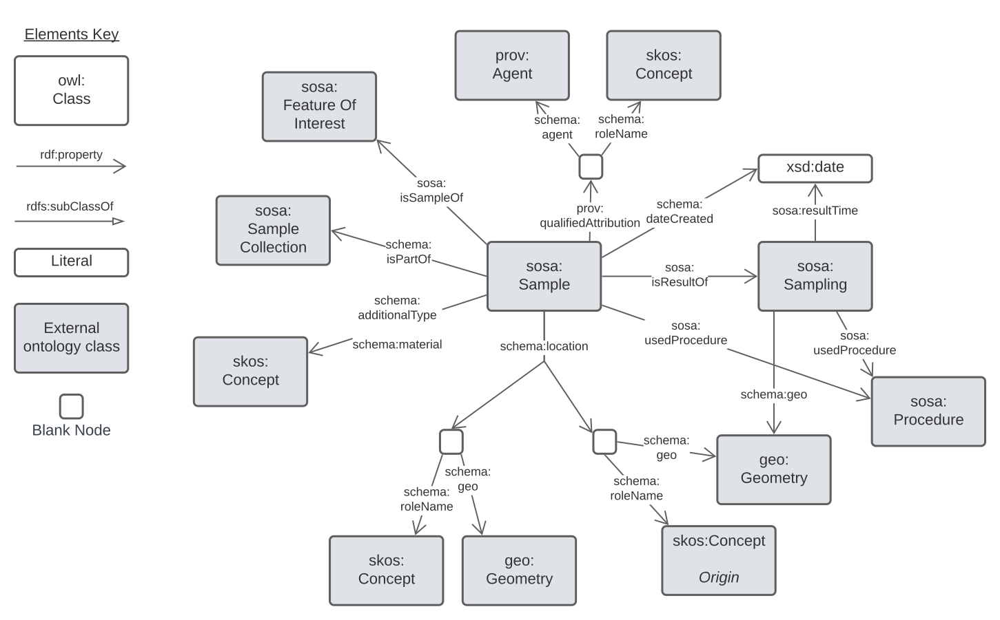
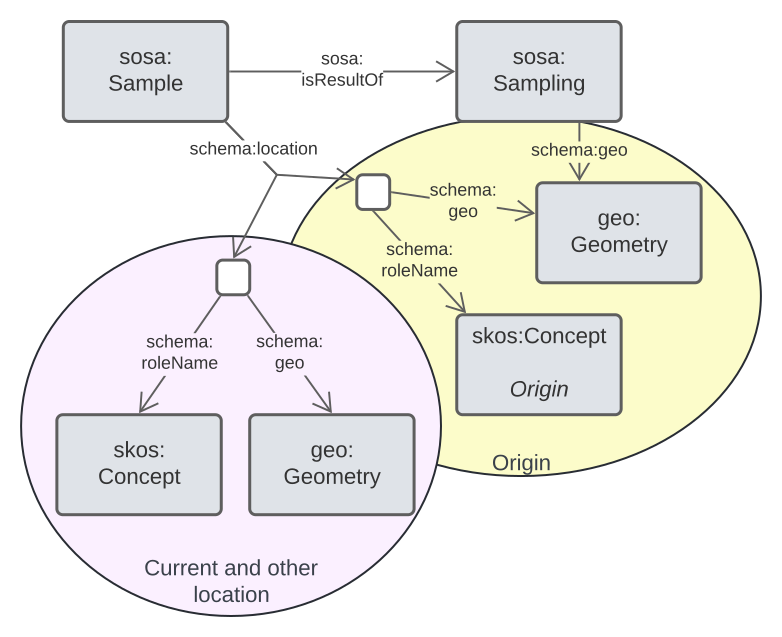
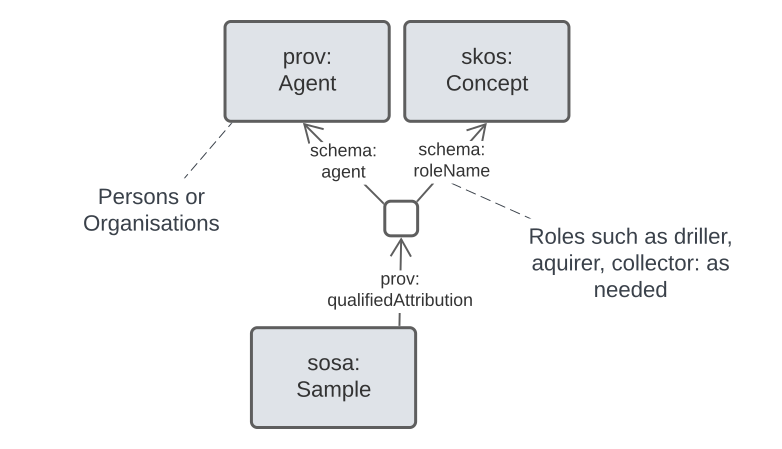

Geosamples Model
{kind=link}
Metadata
- IRI
-
https://linked.data.gov.au/def/geosamples - Title
Geosamples Model
- Creator
- Nicholas J. Car ( nick@kurrawong.ai ) of https://kurrawong.ai
- Version Info
1.0 - Initial version
- Description
A model that describes physical attributes and important relationships of geological samples
Introduction
- Purpose
- Use within a Supermodel
- Use of SOSA & schema.org
- Qualified Relations Pattern & Equivalencies
- Specialised Patterns
- roles
- types & materials
- locations
- timing
- attribution
1. Purpose
The purpose of this model is to group together model elements needed to represent geological samples - rock extracted from boreholes, thin sections, hand-collected sand samples etc. - in a way intuitive to geologists and other users of geological data and also to use established models and modelling practices in the Semantic Web community. This should mean the model is easy to use by people familiar with the geosamples domain but also that it work well with large-scale Knowledge Graph, Linked Data and other sophisticated data structures based on graph principles.
It is NOT the purpose of this model to represent the things sample - rock units and other features of interest - or the results of analysis of the samples, such as geochemistry assays.
2. Use within a Supermodel
This model may be used to represent geological samples in isolation or it may be used with other models, just as any other Semantic Web model may be. However, this model is expected to be used with other models in the geosciences domain with relations between them defined by a Supermodel. The Supermodel concept is a multi-model framework designed to support use of multiple Component Models, integrative Background Models and so on.
Anyone may use this model in isolation, with other Semantic Web models or within a Supermodel of their own making. The Geological Survey of Western Australia's Supermodel that includes this model can be seen online here: https://kurrawong.github.io/gswa-supermodel/.
3. Use of SOSA & schema.org
This model declares few new elements - classes, predicates or axioms - and instead re-uses elements from general-purpose and well-known models (ontologies) together with specific values from a few vocabularies.
The main models this model reuses elements from are:
The central class of this model is a SOSA Sample and most of the predicates indicated for use with it are from schema.org.
Some other model elements come from PROV-O, the Provenance Ontology and some spatial elements from GeoSPARQL.
4. Qualified Relations Pattern & Equivalencies
To provide for many modelling options without declaring large numbers of new predicates for every single property that a geospample may have, this model uses the Qualified Relation pattern. According to this pattern, one data element may link to another, not directly via a specialised predicate but indirectly, via an intermediate element which, in turn, links to "qualifying" information.
For example, instead of creating two predicates to indicate the origin and current location of a sample - where it was obtained from and where it is now stored - perhaps like this:
:sample-x
ex:originLocation [
# ... location info
] ;
ex:currentLocation [
# ... location info
] ;
.we can do this:
:sample-x
schema:location [
schema:geo [
# ... location info
] ;
schema:roleName ex:origin ;
] ;
schema:location [
schema:geo [
# ... location info
] ;
schema:roleName ex:current ;
] ;
.So instead of inventing two predicates - ex:originLocation & ex:currentLocation - we just create a vocabulary of roles that locations can have - ex:origin & ex:current. This may seem equivalent (no better) but it's not (and it is better) as we can qualify things in other ways too such as by time:
:sample-x
schema:location [
schema:geo [
# ... location info
] ;
schema:roleName ex:current ;
schema:startDate "..." ; # when the sample started being in this place
] ;
.5. Specialised Patterns
These patterns are all implementations of common modelling patterns.
5.1 roles
roles are styles of relationship that something, often an Agent, takes on in relation to another thing. In this model, roles are used for:
- Geometries in relation to Features
- e.g. an "origin" or "current" location
- Agents in relation to Samples
- e.g. a sample's "collector" or "owner" or "custodian"
Wherever roles are needed in this model, they should be indicated with the schema:roleName predicate and selected from vocabularies of roles which might only be relevant to one particular scenario, e.g. "collector" is relevant to a Sample but not a Feature.
5.2 types & materials
To indicate the "type" of a sample, use schema:additionalType linking to a type selected from a controlled vocabulary. In this way, different sorts of "type" may be indicated by using schema:additionalType multiple times with different vocabularies. Typing may relate to the physical presentation or the purpose of the sample or other properties of it. Material is handled separately.
To indicate the material the sample is made of, use schema:material.
To indicate the method or equipment used to acquire the sample, use sosa:usedProcedure to link to a method/equipment description in a controlled vocabulary. Vocabularies for this include Borehole drilling method and similar.
5.3 locations

Samples may have more than one important location, such as where it was acquired - its "origin" - and where it is now "current". For this reason, the qualified relations pattern is used to associate a Sample with a location and a role that the location plays.
Samples may also be linked to a sosa:Sampling event which may, in turn, be linked to a location. In that case, the "origin" location many be calculated.
Note that while many kinds of locations can be indicated using geometric coordinates with schema:location containing a schema:geo predicate pointing to GeoJSON, WKT or other expressions of coordinates, this isn't necessary. A location could instead indicate a schema:description and just describe a location's position. This is likely useful for the current location of samples which may be something like "Box 3, Shelf 2, Samples Building, Geological Survey Complex X".
5.4 timing
The fundamental timing of importance to a geosample is when it was sampled. This can be indicated with the schema:dateCreated predicate which can indicate any date or date/time object.
Additionally, a sample may be associated with a sosa:Sampling event object to which timing information maybe attached.
5.5 attribution

Attribution is the association of an entity - some "thing" - with an agent - a person, organisation, tool - that caused/created/affected it.
Samples ay have several important attributions such as acquirer, collector, custodian etc. so, in this model, attribution must be qualified with a role, as per the diagram above.
Classes
Sample c
| IRI |
http://www.w3.org/ns/sosa/Sample
|
|---|---|
| Is Defined By | https://www.w3.org/TR/vocab-ssn/ |
| Description | Samples are typically subsets or extracts from the feature of interest of an observation. |
| Scope Note | Use this class to represent the sample object |
| Example |
PREFIX geo: <http://www.opengis.net/ont/geosparql#>
PREFIX schema: <https://schema/org/>
PREFIX sosa: <http://www.w3.org/ns/sosa/Sample>
:sample-x
a sosa:Sample ;
schema:additionalType <http://linked.data.gov.au/def/sample-type/core> ;
schema:material <http://linked.data.gov.au/def/sample-material/metal-sulphate> ;
schema:dateCreated "2022-05-11" ;
schema:isSampleOf <https://linked.data.gov.au/dataset/qldgeofeatures/AnakieProvince> ;
prov:wasAttributedTo [
schema:agent <https://orcid.org/0000-0002-8742-7730> ; # a Person
schema:roleName ex:collector ;
] ;
prov:wasAttributedTo [
schema:agent <linked.data.gov.au/org/gsq> ; # an Organisation
schema:roleName ex:custodian ;
] ;
sosa:usedProcedure <https://linked.data.gov.au/def/borehole-drilling-method-western-australia/cair-core>
schema:location [
schema:geo [
geo:asWKT "POINT (147.5844 -22.4293)"
] ;
schema:roleName ex:origin ;
] ;
schema:location [
schema:description "Box 3, Shelf 2, Cores Library Building, Geological Survey of Queensland, Zillmere, QLD" ;
schema:roleName ex:current ;
] ;
.
:sample-x-1
a sosa:Sample ;
schema:isSampleOf :sample-x ;
schema:additionalType <http://linked.data.gov.au/def/sample-type/thin-section> ;
schema:dateCreated "2024-09-06" ;
# ...
.
|